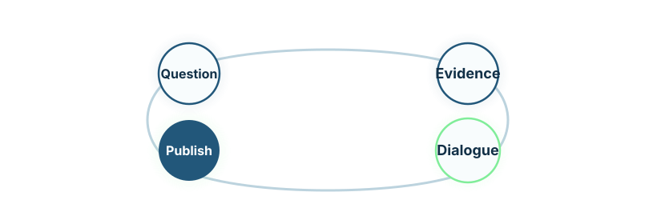

White papers
Strategic documents that explain LydiaRX’s position on genomic AI, secure data collaboration, and venture formation.
Public evidence layer
Research, evidence, and technical foundations.
LydiaRX is research-led. The work is grounded in technical architecture, applied validation, public research projects, industrial prototypes, and partner-facing evidence packages.
This page is designed to become the public evidence layer for LydiaRX. It is the right home for white papers, technical notes, case studies, public deliverables, diagrams, preprints, and short explanations of the company’s architecture and venture directions.

Strategic documents that explain LydiaRX’s position on genomic AI, secure data collaboration, and venture formation.
Short, focused pieces on AI Studio workflows, compute-to-data architecture, and model governance.
Disclosure-safe examples of partner work, industrial prototypes, and applied research outcomes.
Publicly discussable initiatives, collaborations, and technical outputs connected to active research work.
Demonstrations, validation summaries, execution traces, and architecture-backed partner materials.
Overview of genomic AI, LydiaRX AI Studio, Omics Firewall, and venture vehicle formation.
Short technical and commercial explanation of the enterprise agentic AI platform.
Controlled-access infrastructure for sensitive omics and biomedical data.
Generalised description of multi-agent modelling workbenches for dose, titration, and clinical study design.
Explanation of how genomic data, AI models, pharma workspaces, and derivative IP become venture vehicles.